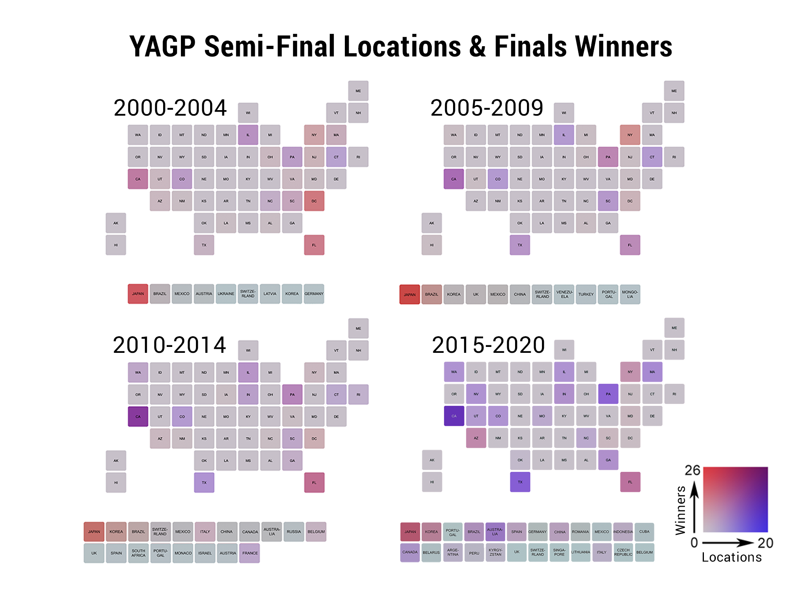
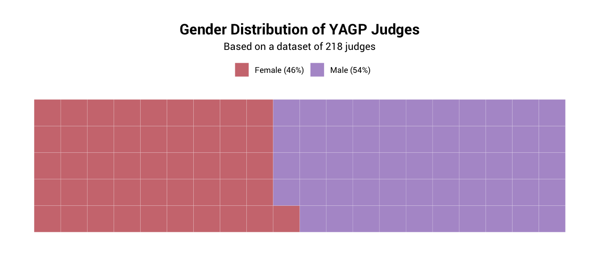

datapointe
Youth America Grand Prix semi-final locations and finals winners, 2000-2020
A few states in the United States have remained YAGP mainstays since the competition’s founding in 2000, like California, Florida, Illinois, New York and Pennsylvania. Though the number of international semi-finals has increased sharply in the last decade, international competitors have frequently placed at YAGP’s New York finals since 2000.
These maps display the number of YAGP semi-final locations and finals winners over time. Dark red indicates more winners, dark purple indicates more locations, and a dark red-purple indicates both more winners and locations in a certain area.
There were only five semi-finals in 2000, the first year YAGP was launched. The locations were all located within the United States: Boca Raton, Florida; Boston, Massachusetts; Chicago, Illinois; Long Beach, California; Washington, D.C. In 2004, the first international semi-finals were held in two locations in Japan.
But from 2005 and 2009, no semi-finals were held internationally. However, international competitors continued to place well at finals. Of the top 5 locations with the most winners at New York finals, three were international. 25 winners trained in Japan, 11 in Brazil and 7 in California. Meanwhile, the number of semi-final locations continued to increase in the United States, particularly in California. In 2009, for example, semi-finals were held in San Francisco, San Diego and Los Angeles.
In 2010, another international semi-final took place, this time in Italy, making it YAGP’s first European semi-final. This semi-final was also featured in the documentary “First Position,” which followed the journey of several YAGP competitors. In the film, Aran Bell and Gaya Bommer-Yemini competed and placed at the semi-final, both advancing to semi-finals in New York. At least one semi-final has occurred in Europe every year since, with locations including Paris, France and Brussels, Belgium.
The number of international semi-finals rapidly expanded in 2016, notably with its first locations in South America. There were semi-finals in Buenos Aires, Argentina; Cordoba, Mexico and Sao Paulo, Brazil. YAGP also held its first semi-final in China in 2016.
In following years, YAGP continued to expand its international reach. There were three new semi-finals in Australia in 2017, in Brisbane, Melbourne and Sydney. The same year, YAGP also held its first semi-finals in Toronto, Canada and Seoul, South Korea.
The competition has continued to add new locations in recent years. In 2018, YAGP held its first semi-final in Barcelona, Spain. In 2019 and 2020, the competition added locations in Jakarta, Indonesia and Bishkek, Kyrgyzstan, respectively. And most recently, in the 2021 competition season, YAGP held competitions in Tel Aviv, Israel and Bucharest, Romania.
Bonus: A brief dive into YAGP judges
Methodology
Data was manually collected from the Youth America Grand Prix website's winners and judges pages. Solo winners in all categories were included. Those who placed in the top 12 were not included. Overlapping locations were not counted (i.e. two separate semi-finals occurring in Los Angeles, California in a competition year, were only counted once) because these maps aimed to visualize the number of semi-final locations, rather than merely the number of semi-finals. Information about the 2021 competition was not included, as the season is ongoing.